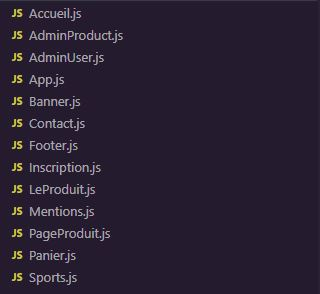
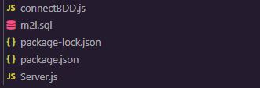

Context
La MAISON DES LIGUES DE LA LORAINNE, établissement du Conseil Régional de Lorraine, est
responsable de la gestion du service des sports et en particulier des ligues sportives ainsi que
d’autres structures hébergées.
M2L souhaiterais développer un site Web type e-commerce pour la location de matériel sportif.
La solution proposée est le développement d’un site Web e-commerce en React.
Ce qu'est React
React est une bibliothèque JavaScript open-source développée par Facebook.
Elle est principalement utilisée pour la création d'interfaces utilisateur interactives et réactives.
React permet de construire des composants réutilisables qui représentent des parties spécifiques de l'interface utilisateur.
L'application
Pour répondre aux attentes envers cette application, 7 pages on été mises en places :
-
Une page de connexion sous la forme d'un modal disponible sur tout le site.
Celle ci s'occupe de verifier que l'utilisateur du site possède bien un compte sur notre base de données.
-
Une page d'insription. C'est ici que se trouve le formulaire d'inscription.
-
Une page recensant tous nos produits et nos sports. Sur cette page se trouve une liste de tous nos produits avec leur nom, prix et bouton d'achat ainsi qu'un carousel
permettant l'accès aux pages de chaque sport.
-
Les pages des sports. Sur ces pages se trouve une liste des produits propres à chaque sport.
-
Les pages des produits. Les pages de chaques produits. Elle contient leur nom, prix et stock ainsi qu'un bouton pour les ajouter au panier.
- Une page de panier. Ce panier est stocké en LocalStorage, c'est à dire en variable d'environnement de votre machine.
-
Une page de gestion de produit. Sur cette page, il y a une liste des produits présents dans la base de données.
En cliquant sur l'un des produits un menu déroulant s'ouvre, donnant accès a des champs de textes permettant de changer les données d'un produit.
Il y a aussi 2 boutons, l'un permettant la sauvegarde, et donc l'envoi en base de données, des changements dans les champs de textes,
l'autre sert à la suppression d'un produit. Pour y avoir accès, il faut que le compte avec le quel vous êtes connecté soit un compte administrateur
- Une page de gestion d'utilisateur. Elle fait la même chose que pour la page gestion de produit mais pour les utilisateurs

L'API et Base de données
Dans le cadre de ce projet, et du projet de l'application mobile, une base de données et une API ont dû être créer.
L'API, en nodeJS, permet la connexion du site et de l'application a la base de données et la base de données, faite sur MariaDB,
stocke les données utilisés par le site et l'application.
